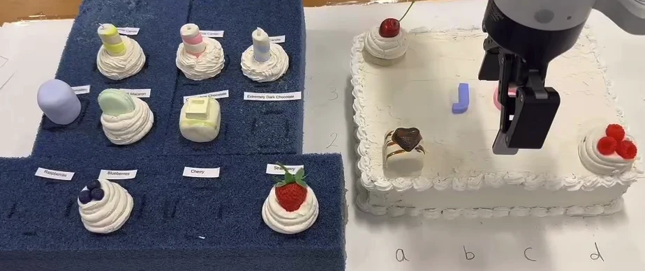
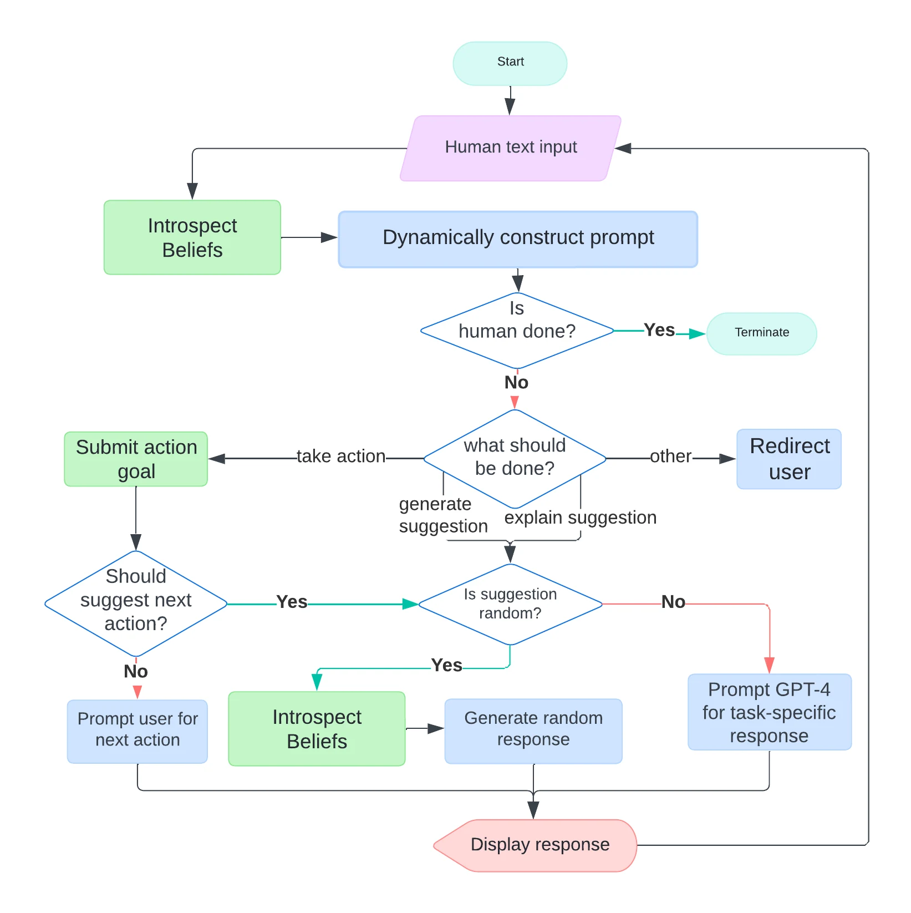
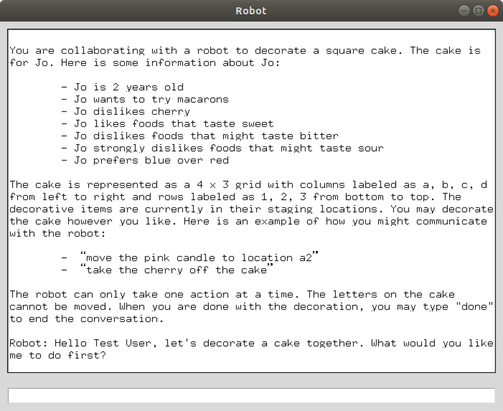

Towards Human-Robot Co-creative Collaboration Through Interactive Task Dialogue
Department of Computer Science, Tufts University, Medford, MA, USA
ICSR + AI 2024

Abstract
We investigate how interactive task dialogue supports human-robot creative collaboration in a cake-decoration task. A GPT-4 dialogue system connected to the DIARC cognitive architecture enables a robot to interpret instructions, suggest design choices, explain its reasoning, and physically place decorations. In a within-subject study with 18 participants, we compare a command-following robot with robots that offer random or task-specific suggestions. Participants perceive the robot offering task-specific suggestions as more supportive and intelligent, and prefer it as a partner for a subsequent task.
Video Demonstration
The cake is represented as a 4 × 3 grid. Participants communicate through a text interface, asking the robot to add or remove decorations and responding to its ideas.
The customer, Jo, likes sweet flavors, wants to try macarons, and prefers blue over red. These preferences give the collaborators a starting point while leaving room for individual design choices.
Download the demoDialogue System
The dialogue manager uses the conversation history and the robot’s current beliefs about the cake to interpret requests. It distinguishes actions, suggestions, explanations, and requests outside the task. Action goals are sent to DIARC, which executes the manipulation and reports its outcome.


Experimental Conditions
A within-subject study: each participant experienced every condition, with the order counterbalanced. The cake was reset between conditions.
| Condition | Suggestions | Justifications |
|---|---|---|
| No dialogue | Follows the human’s commands; offers no suggestions. | Reports only the action status. |
| Random suggestions | Randomly selects a valid next action. | Gives a generic justification. |
| Reasonable suggestions | Proposes an action based on the cake and Jo’s preferences. | Explains the task-specific reasoning and asks for the human’s opinion. |
What we measured
Creative support, Perceived intelligence, Task satisfaction, User experience, Suggestion rejection, Partner preference, Creative self-efficacy
Results
17 of 18 participants chose the reasonable robot as their partner for a new cake-decoration scenario. One chose the random robot, and none chose the no-dialogue robot.
The reasonable robot received higher creative-support and perceived-intelligence ratings than both alternatives. Participants also rated their experience more positively than with either alternative, and their satisfaction more positively than with the random robot.
Participants rejected suggestions less often in the reasonable condition, supporting the value of grounding suggestions in the task and explaining why they fit the design.
Study: 18 university students. These findings concern participant perceptions and choices in this task; they do not establish general improvements in creative ability. See the paper for analyses and statistical comparisons.
BibTeX
@inproceedings{lu2025cocreative,
title = {Towards Human-Robot Co-creative Collaboration
Through Interactive Task Dialogue},
author = {Lu, Hong and Feng, Jingwen and Bethel, Emma and
Sarathy, Vasanth and Short, Elaine and Scheutz, Matthias},
booktitle = {Social Robotics},
series = {Lecture Notes in Computer Science},
volume = {15562},
pages = {141--157},
year = {2025},
publisher = {Springer Nature Singapore},
doi = {10.1007/978-981-96-3519-1_14}
}Presented at ICSR + AI 2024; proceedings published in 2025. Publisher record